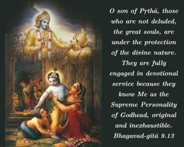
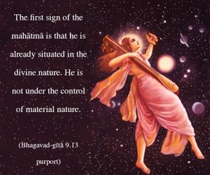
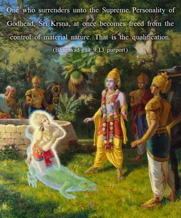
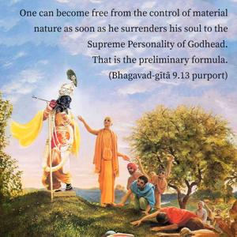

O son of Pṛthā, those who are not deluded, the great souls, are under the protection of the divine nature. They are fully engaged in devotional service because they know Me as the Supreme Personality of Godhead, original and inexhaustible.




In this verse the description of the mahātmā is clearly given. The first sign of the mahātmā is that he is already situated in the divine nature. He is not under the control of material nature. And how is this effected? That is explained in the Seventh Chapter: one who surrenders unto the Supreme Personality of Godhead, Śrī Kṛṣṇa, at once becomes freed from the control of material nature. That is the qualification. One can become free from the control of material nature as soon as he surrenders his soul to the Supreme Personality of Godhead. That is the preliminary formula. Being marginal potency, as soon as the living entity is freed from the control of material nature, he is put under the guidance of the spiritual nature. The guidance of the spiritual nature is called daivī prakṛti, divine nature. So when one is promoted in that way – by surrendering to the Supreme Personality of Godhead – one attains to the stage of great soul, mahātmā.
The mahātmā does not divert his attention to anything outside Kṛṣṇa, because he knows perfectly well that Kṛṣṇa is the original Supreme Person, the cause of all causes. There is no doubt about it. Such a mahātmā, or great soul, develops through association with other mahātmās, pure devotees. Pure devotees are not even attracted by Kṛṣṇa’s other features, such as the four-armed Mahā-viṣṇu. They are simply attracted by the two-armed form of Kṛṣṇa. They are not attracted to other features of Kṛṣṇa, nor are they concerned with any form of a demigod or of a human being. They meditate only upon Kṛṣṇa in Kṛṣṇa consciousness. They are always engaged in the unswerving service of the Lord in Kṛṣṇa consciousness.